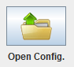

JGAL_GUI lets you save and open settings for all a Genetic Algorithm or part of it.
To save or open part of the configuration, enter an auxiliary windows as Define Genes. Then you can access these actions through the File menu
To save or open a complete configuration you have to be in "Run Algorithm" (without the quotes) Press on the button:
If you want to Save or on the button:
If you want to Open.
JGAL_GUI can also save the results if pressed on the Save button in "Run Algorithm"